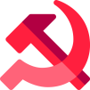
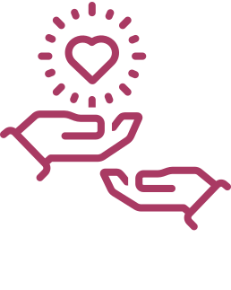

LUTA e nossos Princípios
Somos um movimento social que planta a semente de sociedades ecológicas com territórios coletivos para construir o poder popular e soberania alimentar.
O movimento de Luta dos Territórios por Agroecologia e Poder Popular atua nacionalmente, fortalecendo movimentos locais em territórios periféricos, construindo iniciativas emancipadoras como hortas comunitárias, cozinhas solidárias e cursinhos populares!

Ecossocialismo
Bem Viver
Agroecologia
Poder Popular
Faça parte
Como posso ajudar
Contribua com o LUTA
O LUTA é um movimento popular que depende de doações para continuar sua atuação.
Algum outro texto aqui chamando o pessoal para doar para a vaquinha
Explicar ações que serão feitas em SC
